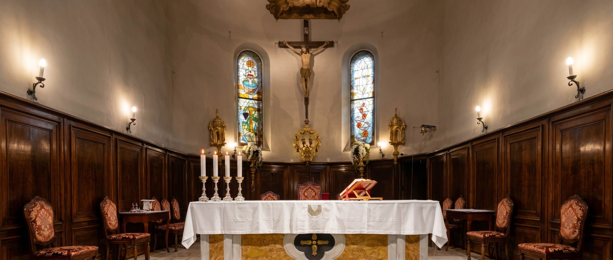

Il gruppo pulizie della parrocchia di Muggia svolge un servizio prezioso e silenzioso: mantenere la chiesa accogliente, ordinata e pronta ad accogliere tutta la comunità.
Il nostro servizio




Pellegrinaggio a Udine

Il gruppo ha vissuto un momento speciale partecipando al pellegrinaggio al Santuario di Santa Maria delle Grazie a Udine.
È stata un’occasione di preghiera, condivisione e comunità, rafforzando il legame tra i membri del gruppo.

Questo servizio, svolto con dedizione e spirito di comunità, è un segno concreto di amore verso la propria parrocchia.